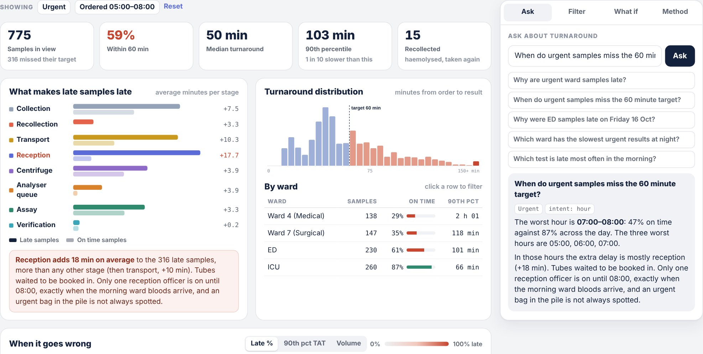

The problem
When a doctor in ED orders a troponin, they expect the result in about an hour. Labs usually measure the part they control, from the tube arriving to the result. But the patient waits from the moment the test is ordered.
The hour is spread across a lot of hands: the nurse who takes the blood, the porter or pneumatic tube, reception, the centrifuge, the analyser, and the scientist who releases the result. When a result is late, every team can say its own step was fine.
What I built
A console that follows every sample from order to released result, with a timestamp for each stage. It shows the turnaround distribution, which ward does worst, and a heatmap of every hour of the month, so a bad morning or an outage stands out. Click any hour and you see each sample's journey as a bar split by stage.
You can also just ask. “Which ward has the slowest urgent results at night?” becomes a filter and an answer, and the console shows what it understood so you can check it.
Then there is the what if tab. Tick a change, like an earlier reception shift or a third centrifuge, and the whole month reruns on the same patients and the same orders. The only difference is the change.
How it works
- A simulated month, built from real processesThere is no public sample level turnaround dataset, so I simulated one. Five wards with their own order patterns, including the 06:00 morning bloods. Pneumatic tube for ED and ICU, porters elsewhere. A reception rota, two batching centrifuges, daily QC, Wednesday maintenance, haemolysed recollects and a tube outage.
- Real queues, not random delaysEvery tube waits for the same people and machines as every other tube. So a busy morning slows everything down, the way it does in a real lab.
- Compare late with on timeThe assay takes the longest on average, but it takes the same time for every sample. The useful question is which stage is longer for late samples than for on time ones. That gap is the bottleneck.
- Questions to queriesA parser picks out wards, tests, priority, times and dates, plus an intent: why, which ward, which test, when or which day. The answer runs on the same numbers as the charts.
- Paired what if runsEach scenario uses the same random seed, so every patient and order is identical. Any change in the result comes from the fix alone.
What I found
Across the month, 87% of urgent samples met the 60 minute target. That average hid two problems.
The first was the morning. Urgent samples ordered between 06:00 and 09:00 made it only 60% of the time. The morning ward bloods arrive while reception has one officer, and the chemistry analyser goes down for QC at 08:00. Urgent tubes get stuck behind hundreds of routine ones.
The second was the wards. Urgent ward samples made their target 52% of the time, against 90% for ED. The wards have no pneumatic tube, so every urgent sample needs a porter, and overnight there is only one.
Haemolysis was the most expensive single event. Every one of the 133 urgent samples that had to be taken again missed its target.
Then I tested fixes. An earlier start for the second reception officer, QC moved to 05:30 and a second porter overnight took the morning from 60% to 83% and the wards from 52% to 69%. A third centrifuge and wider autoverification changed almost nothing, because those stages were not where the time went.